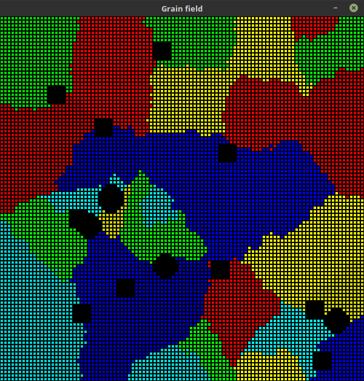

Inclusions¶
Inclusions functionality involves:
- adding inclusions:
- before starting simulation
- after simulation, when the field is filled with grains. Inclusions are added on grain boundaries in this case.
- different shapes of inclusions
- square
- circle
Cells which represent inclusion do not affect neighbour cells. This means that if we add inclusion it will not grow and will not be modified throughout simulation.
Image 4 (below) presents few circle and square inclusions added after filling grain field (after simulation).
{kind=link}
Image 4 Field visualisation after adding inclusions
Code¶
Method responsible for adding inclusions
-
class
ca.grain_field.GrainField(x_size, y_size)[source]¶ -
random_inclusions(num_of_inclusions, inclusion_size=1, inclusion_type='square')[source]¶ Add random inclusion to field. If field is not empty inclusions will be added on grain boundaries, otherwise inclusions will appear in random places.
Parameters: - num_of_inclusions – number of inclusion to be added
- inclusion_size – characteristic dimension (radius for circle, side length for square)
- inclusion_type – can be either
'square'or'circle'
Returns: self
-
Functions for finding calculating coordinates
-
geometry.pixels.circle(x_center, y_center, radius, filled=True)[source]¶ Get pixels to draw a circle
Parameters: - x_center – x coordinate of circle center
- y_center – y coordinate of circle center
- radius – radius of the circle
- filled – if false only pixels on the border will be returned
Returns: pixels belonging to the circle